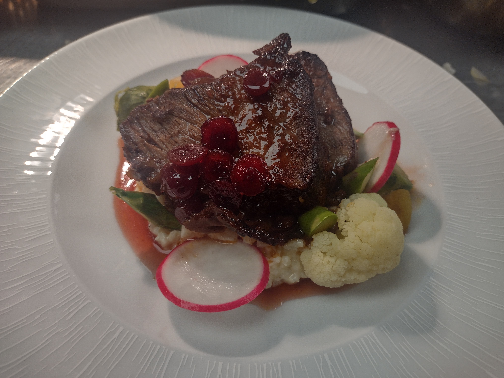
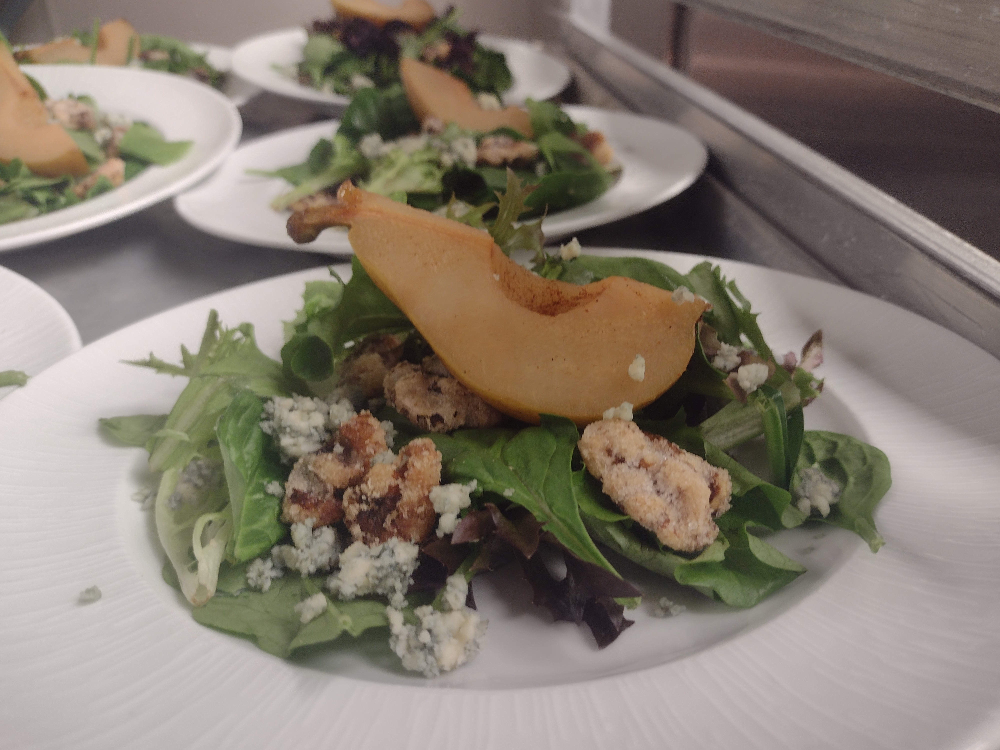
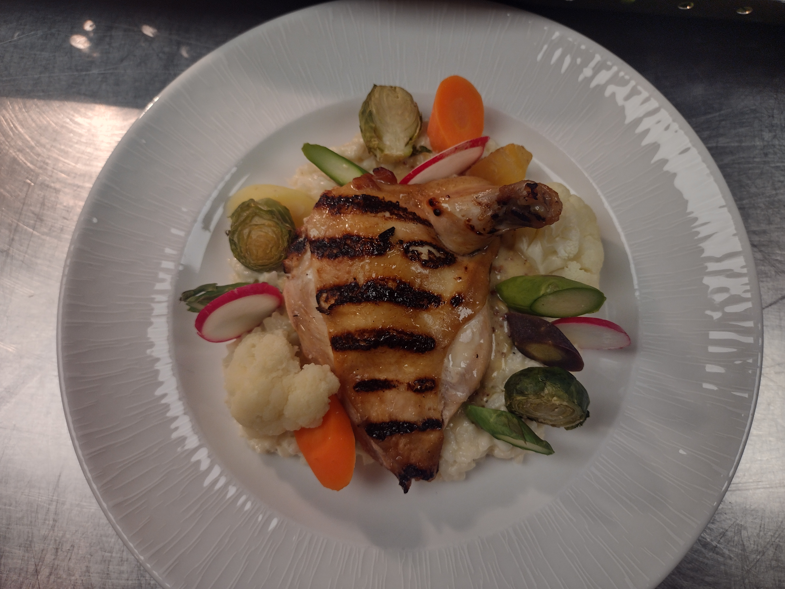

Voici quelques photos de plats de mon travail que j’ai réalisés!
Il s’agit d’un steak grillé avec une sauce aux canneberges, du risotto, du chou-fleur, des carottes, des asperges et des betteraves.

Le deuxième plat est une salade au fromage de chèvre, une demi-poire et des noix confites.

Il s’agit d’un poulet grillé avec risotto, un chou-fleur, des carottes, des asperges et des betteraves.

Ce plat est une simple pomme de terre tranchée, avec du poulet grillé, des asperges, des champignons et de la sauce tomate. C’est très simple, mais nous avions quinze minutes pour le créer et nous n’avons pas pu utiliser d’assaisonnements! Pas même le sel!